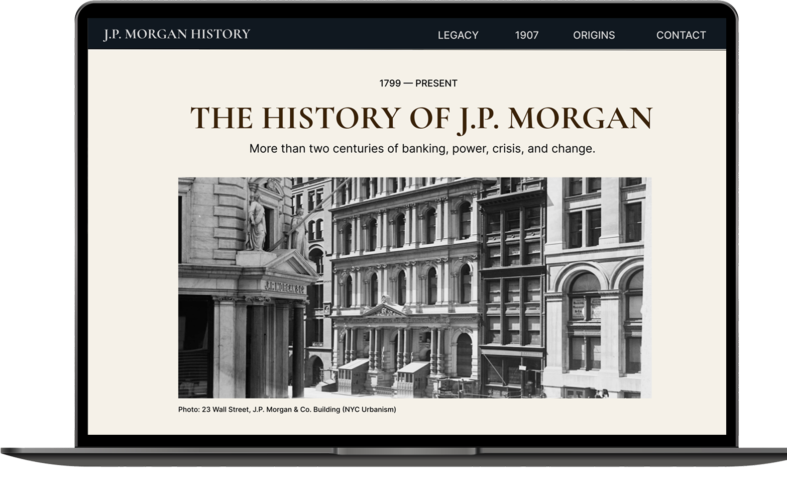

Exploring more than two centuries of financial
history through research, digital storytelling,
and responsive design.
ROLE
Researcher & UI/UX Designer
YEAR
2026
PROJECT TYPE
Academic Design Project
INDUSTRY
Financial Services

Project Overview
The History of J.P. Morgan is an independent
academic design project exploring the evolution
of one of the most influential institutions in
American financial history.
Through historical research, archival imagery,
and editorial design, I created a three-chapter
digital experience covering the institution's
origins, the Panic of 1907, and its transformation
into JPMorgan Chase.
The project focused on making complex financial
and historical information accessible through
clear content organization, visual storytelling,
and desktop and mobile designs in Figma.
Selected Work
Financial & Historical Research
Financial History · Research · Information Synthesis
Organized more than two centuries of banking
history into three interconnected chapters,
examining institutional growth, financial
instability, and the evolution of the American
banking system.
01 / ORIGINS1799
The Manhattan Company
The institution's earliest roots and the
emergence of J. Pierpont Morgan as an
influential American financier.
02 / CRISIS1907
The Panic of 1907
An examination of bank runs, market
confidence, emergency liquidity, and
financial reform.
03 / LEGACY2000
Institutional Evolution
The merger of J.P. Morgan & Co. and
Chase Manhattan, bringing together
two major banking histories.
Understanding the Panic of 1907
Financial Markets · Liquidity · Systemic Risk
Examined how declining market confidence
and liquidity pressures exposed weaknesses
in the American banking system, ultimately
contributing to financial reform.
FINANCIAL CRISIS ANALYSIS
How the Crisis Unfolded
01
Market Speculation
Failed United Copper stock speculation.
02
Bank Runs
Depositors rush to withdraw funds.
03
Liquidity Crisis
Financial institutions face pressure.
04
Intervention
Morgan coordinates emergency funding.
05
Financial Reform
The Federal Reserve is established in 1913.
Corporate Evolution
Corporate History · Mergers & Acquisitions
Explored the institution's transformation
over time, including the 2000 merger that
brought J.P. Morgan & Co. and Chase Manhattan
together.
2000 · CORPORATE MERGER
Two Histories Become One
J.P. Morgan & Co.
+
Chase Manhattan
JPMorgan Chase
227Years of History · 1799–2026
Research & Content Strategy
Information Architecture · Digital Storytelling
Translated historical information into a
chronological narrative supported by
archival imagery, timelines, and a
consistent editorial hierarchy.
01
Research
Explore historical events and archival material.
02
Synthesize
Identify significant financial developments.
03
Structure
Organize content into three historical chapters.
04
Communicate
Present information through editorial design.
Visual Identity & Design System
Color Theory · Typography · Editorial Design
Combined warm ivory, antique gold, dark
tones, serif typography, and archival
photography to create a visual identity
inspired by financial history.
EDITORIAL DESIGN
History & Legacy
More than two centuries of banking,
power, crisis, and change.
Midnight Navy
#101820
Warm Ivory
#F5F1E8
Antique Gold
#B28A4A
Deep Brown
#3A2206
Light Gray
#D9D9D9
White
#FFFFFF
Black
#000000
Final Figma Designs
Figma · UI/UX Design · Responsive Design
Explore the three historical chapters across
desktop and mobile layouts. The mobile designs
adapt content hierarchy, imagery, navigation,
and timelines for smaller screens.
Home / Origins · Desktop
Responsive Design Approach
Mobile Experience · Visual Hierarchy
Adapted the desktop layouts for mobile
by reorganizing content, simplifying
navigation, and transforming horizontal
timelines into vertical reading experiences.
DESKTOP TIMELINE
1799
1837
1871
1907
2026
MOBILE TIMELINE
1799
1837
1871
1907
2026
Research & Visual References
Archival photographs, historical illustrations,
and contemporary imagery supported the
project's visual narrative. Image credits
are included throughout the original designs.
Encyclopaedia BritannicaProject GutenbergNYC UrbanismWikimedia CommonsSmithsonian National Postal MuseumJPMorgan ChaseReutersShorpy
My Contribution
I combined historical research, financial
storytelling, content development, and
responsive design to create a cohesive
educational experience in Figma.
This project strengthened my ability to
synthesize complex information and communicate
financial concepts through accessible,
visually engaging digital experiences.
Financial HistoryResearchInformation SynthesisFinancial StorytellingFigmaUI/UX DesignResponsive DesignInformation ArchitectureVisual Communication
Independent academic project. Not affiliated
with or commissioned by JPMorgan Chase.